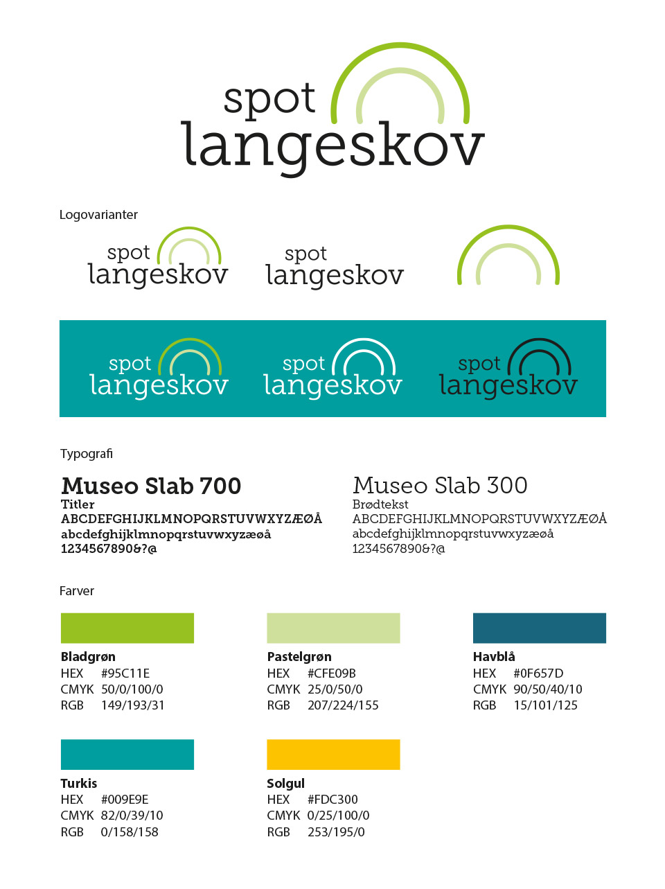

Spot Langeskov er en lille virksomhed i Langeskov, der arbejder for, at øge den lokale handel i Langeskov og omegn.
Spot Langeskov sætter fokus på gode tilbud fra både butikker i Langeskov Centret, mindre lokale virksomheder udenfor bymidten og selvstændigt erhvervsdrivende i området. De kommunikerer tilbud og historier fra virksomhederne ud til lokalbefolkningen via nyhedsbreve på email.
Brandet skal kommunikere positivitet, tillid, modernitet og handel.
Bomærket i logoet er tegnet, så det ligner de halvcirkler, der er over indgangene til Langeskov Centret. Det symboliserer, at man går ind i en verden af gode tilbud og oplevelser.
Samtidig ligner det en regnbue, som også er et symbol på lykke. Man finder skatten (det gode tilbud) for enden af regnbuen.
Ved at tegne regnbuen i sin mest enkle form og med et minimalt antal farver, undgår man, at det udtrykker barnlighed og "legestue".
Der blev udviklet forskelligt branding- og markedsføringsmateriale til Spot Langeskov, bl.a. fav-ikon og web-bannere (se ovenfor).
Og vinylstickers til butiksdørene, illustrationer, brevpapir og flyers(se nedenfor).